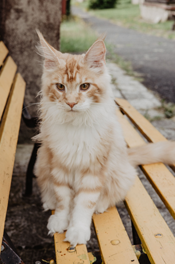

Existem dezenas de raças de gatos, cada uma com características diferentes. Na tabela abaixo estão algumas das mais conhecidas.
| Raça | Origem | Tamanho |
|---|---|---|
| Persa | Irão | Médio |
| Siamês | Tailândia | Médio |
| Maine Coon | Estados Unidos | Grande |

Para ter um gato saudável, segue estes passos:
Para saber mais, visita a página da Wikipédia sobre gatos.